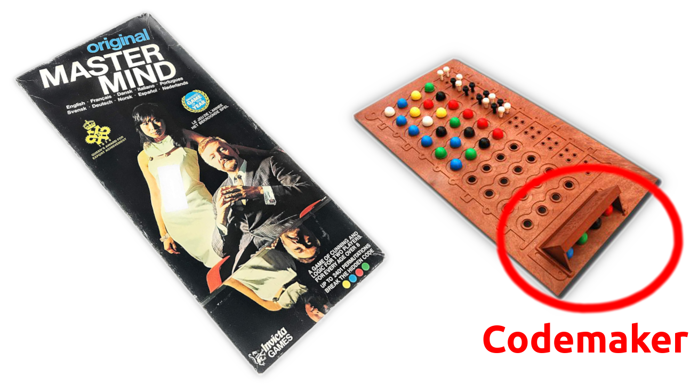
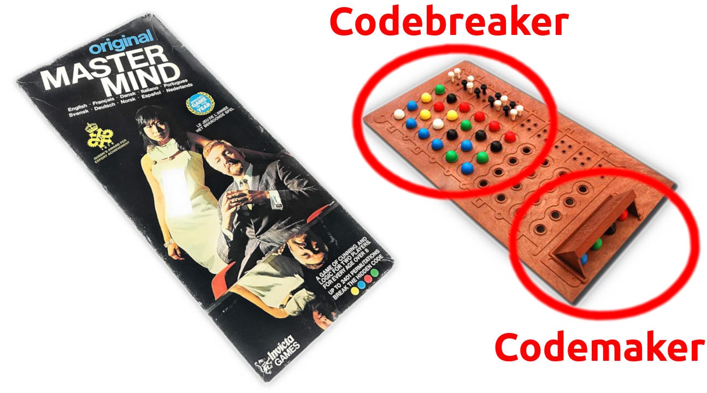
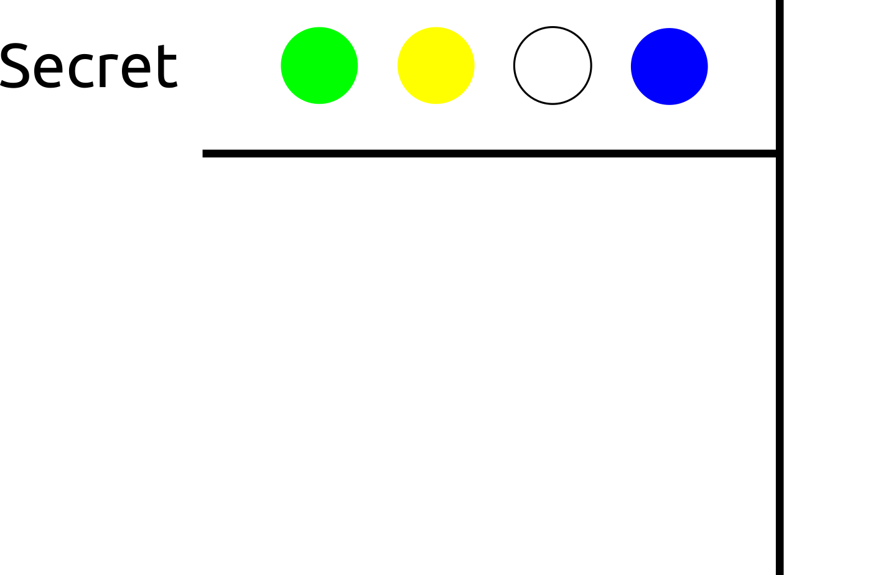
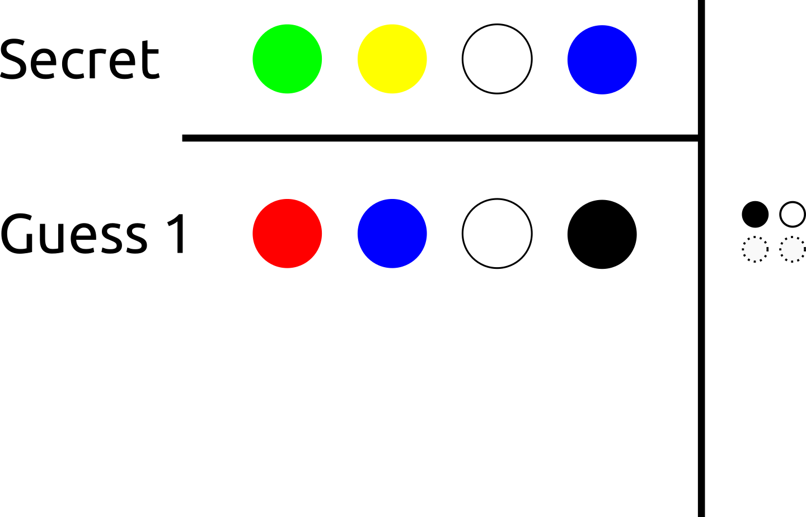
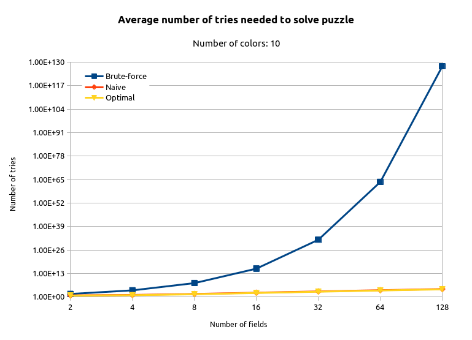
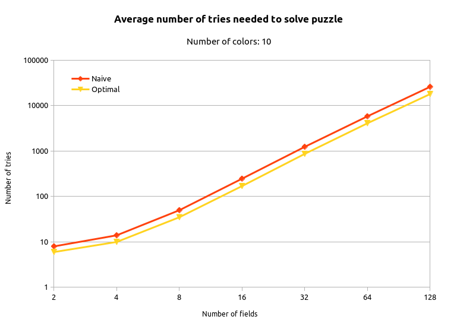

There’s a
Mastermind
in all of us..
Kris van Rens
Memory lane!
Does anyone remember the game of Mastermind
An explanation for Gen Z



Example game

Example game

Example game

Let’s code it up!
Codemaker/-breaker (solvers)
C++20 style 

Scalability

The goals and rules
- Rule #1: there are no rules!
- Use the fanciest new tools available
- Learn tons of stuff and have fun!

Highlights
Ranges library
Compile-time programming
Trying to move as much code as possible to compile-time..
E.g. constexpr testing:
Docopt.cpp
Running the code
$ bin/master-mind-solver -v naiveTrying secret #1: [00000000000000000000000000000000000000000000000000]..
Trying secret #2: [11111111111111111111111111111111111111111111111111]..
...
Trying secret #3543: [11340189940424020494819604144247522803658022502071]..
Trying secret #3544: [13840189940424020494119604144247522803658022502071]..
Solver 'naive' needed 3544 stepsGraphs…just because

Graphs…just because

Future plans


Nerd-life

Separation of concerns
Separate your work place from hobby work place!


All the work counts
Binge-working is counter-productive – don’t do it! 
Doing a little bit every day really adds up..

That’s it! 
Extra slides
Build system setup
CMAKE_BUILD_TYPE RelWithDebInfo
CONAN_CMD /home/kris/.local/bin/conan
ENABLE_CACHE ON
ENABLE_CLANG_TIDY ON
ENABLE_COVERAGE ON
ENABLE_CPPCHECK ON
ENABLE_DOXYGEN OFF
ENABLE_INCLUDE_WHAT_YOU_USE OFF
ENABLE_IPO OFF
ENABLE_SANITIZER_ADDRESS OFF
ENABLE_SANITIZER_LEAK OFF
ENABLE_SANITIZER_MEMORY OFF
ENABLE_SANITIZER_THREAD OFF
ENABLE_SANITIZER_UNDEFINED_BEH OFF
ENABLE_TESTING ON
WARNINGS_AS_ERRORS ON
Press [enter] to edit option Press [d] to delete an entry
Press [c] to configureNeat tricks (1)
template<typename T>
using Container = typename std::array<T, NUMBER_OF_FIELDS>;
using Secret = Container<Color>;
using Score = Container<Outcome>;
using Indices = Container<unsigned int>;
template<typename T>
[[nodiscard]] constexpr auto indices(T container) {
Indices result;
std::iota(result.begin(), result.end(), 0);
return result;
}Neat tricks (2)
using namespace std::ranges;
constexpr IntermediateScore MM::scoreCorrectGuesses(const Secret& secret) const {
Score result = {};
Container<bool> marker = {};
for_each(indices(secret), [&](auto index) {
if (secret[index] == secret_[index]) {
result[index] = Outcome::Correct;
marker[index] = true;
}
});
return {result, marker};
}Debugging constexpr tests
Change static checks to run-time checks!
‘Relaxed constexpr’